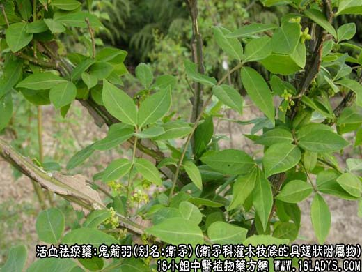
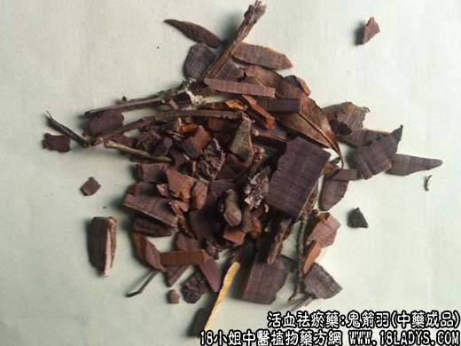

【功效与作用】
鬼箭羽，别名：卫矛、鬼见羽、鬼箭、六月凌、四面锋、篦箕柴、四棱树、山鸡条子、四面戟、见肿消、麻药，为卫矛科灌木植物卫矛枝条的具翅状附属物。苦，寒。归肝经。
破血祛瘀，行血通经，散瘀止痛：用于月经不调，产后瘀血腹痛，跌打损伤，肿痛，风湿痹痛，及虫积腹痛等。
【药物形态】
本品为具翅状物的圆柱形枝条，顶端多分枝，长约40～60cm，枝条直径2～6mm，表面较粗糙，暗灰绿色至灰黄绿色，有纵纹及皮孔，皮孔纵生，灰白色，略突起而微向外反卷。翅状物扁平状，靠近基部处稍厚，向外渐薄，宽4～10mm，厚约2mm，表面深灰棕色至暗棕红色，具细长的纵直纹理或微波状弯曲，翅极易剥落，枝条上常见断痕。枝坚硬而韧，难折断，断面淡黄白色，粗纤维性。气微，味微苦。另，市售也有用木翅的，木翅为破碎扁平的薄片，长短大小不一，宽约4～10mm，两边不等厚，靠枝条生长的一边厚可至2mm，向外渐薄，表面土棕黄色，微有光泽，两面均有微细密致的纵条纹或微呈波状弯曲，有时可见横向凹陷槽纹，质轻而脆，易折断，断面平整，暗红色，气微，味微涩。用枝者以枝梗嫩、条均匀、翅状物突出而齐全者为佳。用翅状物者，以纯净、色红褐、无枝条、无杂质、干燥者为佳。
【药效鉴别】鬼箭羽活血通络，祛瘀止痛，与甲珠合用，直达病所，活血通脉止痹痛功效益增。
【临证应用】治过敏性疾病。取卫矛鲜品60g，水煎外洗；内服，或配土茯苓，地肤子等煎服。
【药理作用】有降血糖、降血压和增加冠脉流量作用。
【化学成分】含表无羁萜醇、无羁萜、槲皮素、卫矛醇、木栓酮等。
【用量用法】5——10g，水煎服，或入剂。外用适量。